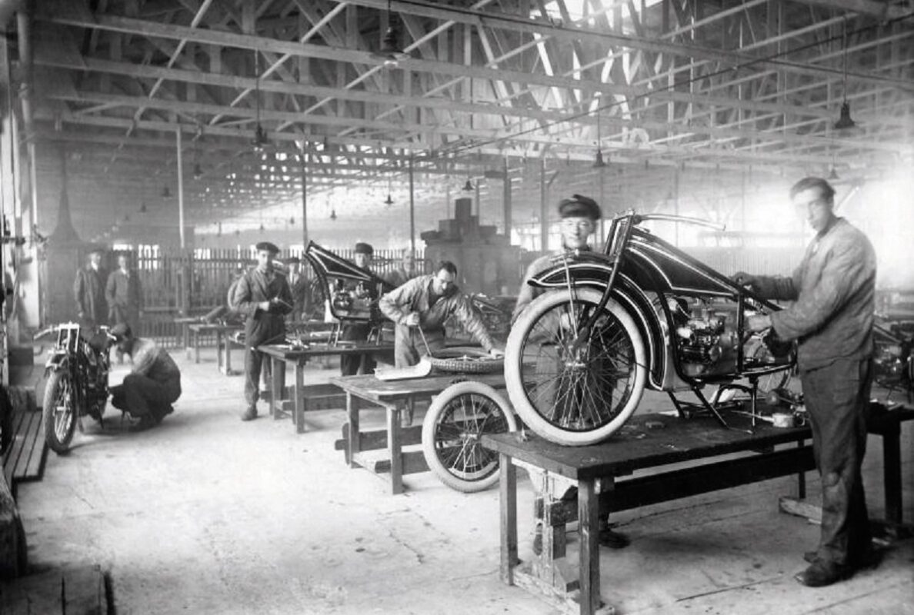
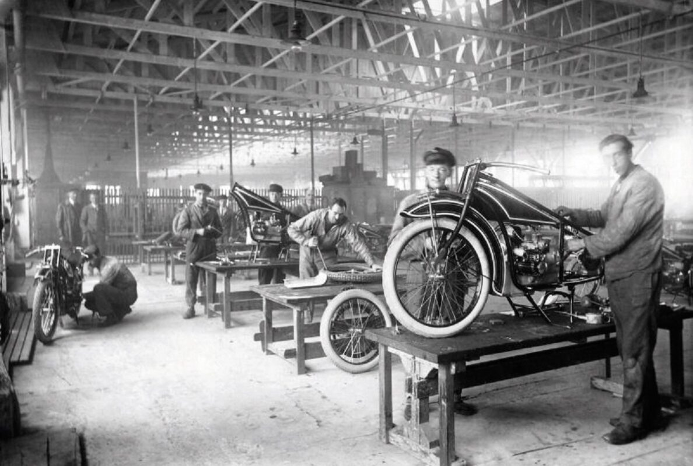

El teléfono fue, al igual que la radio, otro ejemplo de lucha por la patente del invento. Hasta hace bien poco se consideraba que el descubridor del teléfono fue Alexander Graham Bell, pues a su nombre estaba la patente que se registró en 1876. Sin embargo, en 2002 el Congreso de los Estados Unidos reconoció que el autor de dicho invento había sido, en realidad, el ítaloamericano Antonio Meucci. La primera demostración pública del teléfono (aunque Meucci lo había bautizado como teletrófono) fue realizada en 1860, no obstante, el primer prototipo de este dispositivo de telecomunicación se perdió enseguida.
 

La Tercera Revolución Industrial se asienta sobre nuevas tecnologías de la información y la comunicación, así como en las innovaciones que permiten el desarrollo de energías renovables. Como consecuencia las potencialidades de estos dos elementos actuando conjuntamente, se prevén grandes cambios en diversas áreas. Nunca antes se había llegado a unas cotas tan altas de interactividad e intercomunicación, al tiempo que las innovaciones en materia energética podían significar un cambio tan sustancial como el que se prevé con el desarrollo y explotación de fuentes renovables de energía.
Cuando se inventaron las primeras máquinas y se instalaron las primeras fábricas, nadie sabía todavía que eso iba a cambiar la historia de la humanidad. Desde ese momento y hasta ahora, la mayoría de las cosas que usamos cada día se producen en una fábrica. El paisaje de nuestro mundo cambió definitivamente con la silueta de las fábricas.